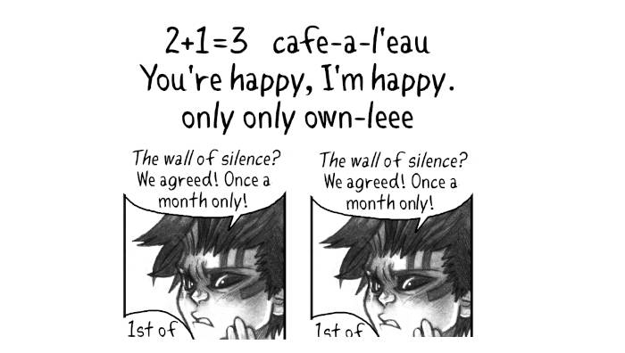

About
About Projects
Projects Books
Books Games
Games Stories
Stories Store
Store Notes
Notes How-to
How-to2024-09-19 Shades of Bacchus!
Hello all! In the 1934 film It's A Gift, a brat drops grapes on a man's face, after which he shouts "Shades of Bacchus!" Bacchus is the god of wine in Roman mythology. Dev & I heard this said in the 4th season of What we Do in the Shadows, said by the energy vampire Colin Robinson in a moment that doesn't involve wine or grapes, merely to express surprise, but we loved this saying so much that we have since adopted it. And now, your life too has been enriched by having learned that this expression exists.
Now on to the updates of the month!
WEBSITE NEWS. This website now has a light mode! I should have implemented this ages ago, all of my other websites have a light/dark more, but now it's done! If your browser preferences are set for light mode, you'll see it. The default is still the dark mode, because it's what my eyes prefer.
In other website-related news, I wrote a post called keeping teeth healthy. I was hesitant to share it publicly because I was embarrassed to admit of being bad at taking care of my teeth, but I got a lot of support from others who suffered the same problems. Body maintenance is difficult, I ought not to be embarrassed about it, I will likely continue to learn how to do things better till I die.
SAILING. Pino is back on the Victoria docks. I was looking forward to it this year, I was glad to have access to water on tap again. In the summer, water in the Salish Sea is a rare commodity, we have to use it like the precious resource that it is. This translates to not doing laundry, and by not taking quality showers aboard for 5 months. The water in our tanks is for drinking, and for cleaning dishes only(when water is especially low, I usually use a pressure sprayer and do the dishes in the cockpit). After a summer of hard sailing, Pino is a damn mess. I've already cleaned the gunk out of the quarter berth and galley, but each space needs a good exorcism.
Being back near a city also means that Dev & I can ship stickers again! I've put items in my store back online(still selling some mushroom drawings). Devine found a spirograph set for 5$ at a thrift store, we now make intricate patterns on all of the letters that we ship!
ART. I bought myself a set of coloring pencils! I got them specifically for the Rabbit Waves project, for illustrations that need a touch of color. I am creating content for it almost everyday! The project is not released yet, but it'll be out before the end of the month.
The bird in the drawing below is a long-billed murrelet, a bird that hangs around the east coast of Russian and Northern Japan. I have never seen this particular type of murrelet, but I have seen Kittlitz's murrelets while sailing in Southeast Alaska. They are such beautiful, tiny birds! They are like small compact auks, measuring about 25 cm (9.8 in). Yes, rabbit waves will have rabbits, but also plenty of seabirds.
FONT. I fixed a few issues with the font for hakum. Had bad kerning between n & l (the word only comes up a lot). I also moved the apostrophe, hyphen, and the plus sign higher. The font is still not 100% perfect, I fix it when I find the time. I'd also really like to add glyphs for french(é è ê) at some point. See making a font. I didn't have time to work on hakum at all this month, I am sad about this, but I'm prioritizing rabbit waves at the moment.
BOOKS. I finished reading Andy Weir's Project Hail Mary. I did not expect to like this book so much, the Martian was ok, but this book isn't only about solving problems in a hostile environment(space), it's also about camaraderie. It is difficult to explain why I loved the book without spoiling it, but I will say that the main character's encounter with Rocky really makes this book shine.
MOVIES. I learned that Boots Riley, the director/screenwriter of Sorry to Bother You, a film that I loved, had also recently directed the series I'm a Virgo. I finally got around to watching it, and holy crap...it is very, very good! The characters were well-crafted, the world was fun and created with purpose(to talk about corporatocracy, oppression and exploitation). Then there's Parking Tickets, a fictional animated TV show within the I’m a Virgo universe. Parking Tickets is dark, it grips you and doesn't let go. I enjoyed reading about the show within a show in this article.
I watched Yintah, a CBC documentary following indigenous land defenders in a decade-long fight to keep fossil fuel companies from building pipelines on their traditional lands. Watching this I was completely disgusted at the hypocrisy and barrage of lies coming out of the mouths of Canadian Government officials, pipeline workers and the police/RCMP. Their eyes are set on resource extraction and nothing will keep them from achieving their goals, Indigenous people know that better than anyone.
Reconciliation is a word that is thrown around to appease voters, it's an illusion, behind the curtain the Canadian Government is still using century-old tactics to remove Indigenous people from their lands.
"I want to buy your horse," an American settler says to an indigenous man. "No, I want to keep my horse," the indigenous man says. Dissatisfied with this response, hellbent on getting the man's horse, the settler goes to another indigenous man, "I want to buy that horse," he says, asking permission from someone who doesn't have the authority to give that horse away.
This short skit illustrates well how land was seized in the past, and what is still done today when governments want something from Indigenous people. A few weeks ago, I finished reading I Will Fight No More Forever by Merrill D. Beal, documenting how the American settlers displaced the Nez Perces from their lands. Back in 1877, Chief Joseph too was suffering the lies of government officials: "It makes my heart sick when I remember all the good words and all the broken promises." Good words do not last long unless they amount to something.
QUOTESI have carried a heavy load on my back ever since I was a boy. I learned then that we were but few while the white men were many, and that we could not hold our own with them. We were like deer. They were like grizzly bears. We had a small country. Their country was large. We were contented to let things remain as the Great Spirit Chief made them. They were not; and would change the mountains and rivers if they did not suit them.
A quote by Chief Joseph
MUSIC. I am head over heels for the techno mix BEHEĀDER - LA FORZA. I have a strange relationship with music, songs affect me deeply, beautiful voices and arrangements have the power to bring me to tears. Devine sent me an article called Brain connectivity reflects human aesthetic responses to music, which sets out to explain how certain individuals have strong emotional reactions to music.
CALL TO ACTION. Given and C.C., two bright stars are struggling to stay afloat. Circumstances have compelled them to live nomadically. They lack a legal residence anywhere and have neither pensions nor access to banking, social support or medical services. They make due with meagre finances and fend off the increasing pressures of age (C.C. turns 70 this year) and chronic illness. I have donated to their cause many times, but support from many more people would help them ensure that they can continue to get prescription medicines, medical care, as well as the basic requirements of keeping an old boat — their home — afloat for a longer chunk of time, which in turn will help alleviate some stress. Give what you can.
ARTICLES I READ AND LIKED
- Handwriting Your Own RSS Feed
- The Collapse of Self-Worth in the Digital Age
- Hurricane Helene and the ‘Fuck It’ Era of AI-Generated Slop
- A Soft Manifesto
- Boots Riley Talks About a Socialist Alternative for Society
- The Web Isn't Forever
GREAT WEBSITES
- Alt-text selfies, a website documenting selfies but in the form of unique and beautifully-written alt-text
- Removed Across SE Asia, a photo series by Eric Pickersgill showing people with their phones digitally removed.
- The Museum of Retro Technology, a website documenting cool retro tech, like heliographs and optical telegraphs.